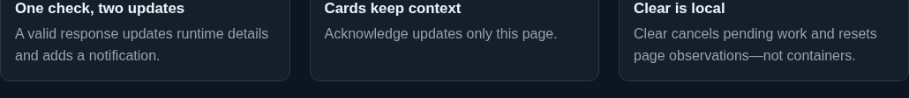
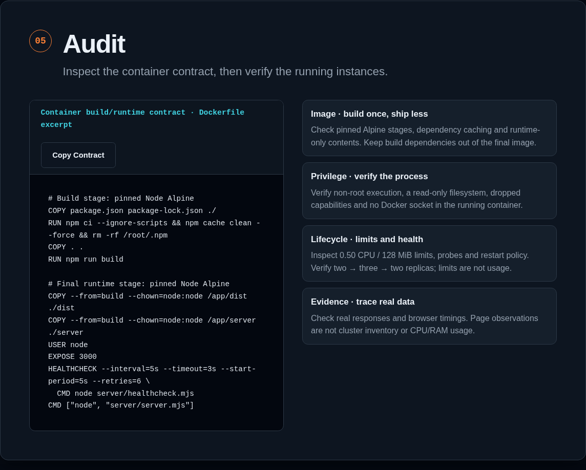

Technical checks passed; independent final-snapshot review pending.
| Viewport | Note columns | Largest note | Largest Audit check | Week5 Audit reference |
|---|---|---|---|---|
| 1920px | 3 | 111.0px | 110.5px | 135.3px |
| 1000px | 3 | 135.8px | 135.3px | 135.3px |
| 800px | 3 | 160.6px | 160.1px | 184.9px |
| 390px | 1 | 135.8px | 160.1px | 187.8px |
At1920px the explanation notes were about290px tall before correction; now111px. At1000px the old layout wrapped2+1; the corrected layout keeps three compact equal-width/equal-height cards. Phones stack at600px and below. Text remains at least16px; no fixed card-height clipping is used.


The initial4caseRED and subsequent160pass/8fail attempt are retained separately and are not accepted or added to final counts. This is a scoped card-density verification, not a new full Lighthouse/performance certification; earlier architecture audits belong to their original snapshots. Visual approval, Resume integration, cross-showcase rollout and publication remain separate.